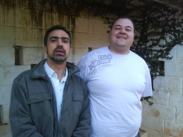
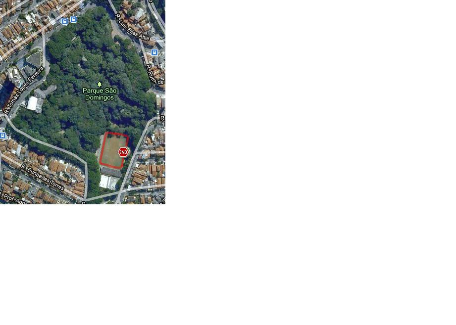

vamo, vamo, vamo…
Ex-sedentário
Track Field: Corrida e Caminhada Contra o Câncer
57 years
by Ana Shibata
in Ex-sedentário
Hoje aconteceu a Corrida e Caminhada Contra o Câncer promovida pela Track Field no Center Norte as 8hs da manhã.
O sedentarismo continua em alta comigo……….. mas estou no firme propósito desta semana que se iniciará em pegar firme nos treinos e exercícios de resistência. Acho que meu melhor desempenho dependerá disso.
Ontem fez muito calor aqui em Sampa, coisa de 32ºC, com vários dias de baixa umidade.
Tentei dormir cedo, mas as tarefas familiares não me deixaram dormir senão quando quase virava uma abobora………rs………… mas foi uma noite de cão…….. literalmente, a princípio ainda fazia muito calor. Acordei várias vezes a noite, ops, madrugada, sei que as 2hs05 min senti o frio que vinha pela veneziana da janela, confirmando a previsão do tempo de que sábado seria frio com queda da temperatura. Mas esta não foi a única vez que acordei, seguiram-se de hora em hora e, numa destas percebi que a ansiedade bateu…… afinal é o meu maior percurso em corridas inscritas sem treinos, fiquei rolando na cama, até pegar no sono novamente para acordar as 6 hs……..
O tempo estava frio e ouvi no rádio que fazia 21ºC, no Center Norte o termômetro acusava 18ºC, chuviscou em vários pontos da corrida. O aquecimento do meu corpo fez com que eu abaixasse as manguitas até os punhos (levantadas rapidamente ao final da corrida).

Indo pegar o chip
Mas desta vez não corri sozinha, consegui fazer com que o maridão caminhasse (eu o inscrevi para caminhada) com a Syssi, achei bárbaro ele não ter recusado ………. ah, a Melinha também participou, mas corremos cada qual no seu ritmo (bom, ela estava acompanhada do Ygor).

No início ela estava a minha frente, logo depois eu a passei e continuei assim, quando já estava na 2ª volta do circuito vi a Sy e o maridão caminhando. Algum tempo depois Melinha encostou e disse que eu dei trabalho para ser alcançada (rs), mas sabia que o tempo estipulado em minha meta mental de correr em 50 min. seria ultrapassado, segui enfrente e os deixei para atrás.
O circuito para mim foi inusitado, diferente das outras provas 2 voltas pelo circuito com subida e descida, gostei.
A melhor imagem da corrida é avistar o portal da chegada……….. e lá estava eu para completar mais esta corrida.
Confirmou o que eu senti nos kms finais, ultrapassei minha meta e cheguei aos 53min45seg líquidos.
Fiquei decepcionada comigo, mas sei que dei causa, não estou treinando e preciso fazê-lo urgentemente, porque a Maratona de Revezamento Pão de Açúcar está chegando.
Próxima semana que me aguarde…
Nosso reencontro no final da corrida
Nós também merecemos o podiummmmmmmmmmmmmmm…………..iuhuuuuuuuuuuuuuuuuuuuuu
Encontro no Parque. Festa de amigos. Meu aniversário
137 years
by Claudião
in Ex-sedentário
Nunca demorei tanto para postar no blog qualquer acontecimento de corrida. Mas desta vez eu travei. Emoção demais também nos trava. Os últimos dias se passaram de forma totalmente diferente. Fiquei meio aéreo, literalmente abobalhado. Por vezes, peguei-me pensando se tudo não passou de um lindo sonho.
Sobre o encontro/festa do último domingo eu escreveria um livro. Então, o que pinçar? A solução eu encontrei no Blog da Dona D. Hoje grande amiga e Baleias, Equipe da qual sou parceiro de coração, coração este que tem lugar de sobra para ser Chefe de Torcida desta maravilhosa equipe Ex-sedentário e mais uns treinos legitimamente 100 Juízo.
Tudo começou com o necessário agendamento de data para encontro dos membros da Equipe Ex-sendentário que participará, com oito integrantes, da Maratona de Revezamento Pâo de Açucar, no próximo dia 19.
Eu já estava muito feliz de juntar tantos amigos especiais para a prova de revezamento, mas ainda não estava suficientemente bom. Consultando as bases (amada esposa) e contando com o apoio da minha mãe, que antecipou a viagem dela em 10 dias, especialmente para o evento, resolvemos então que seria também uma comemoração do meu aniversário, com direito a bolo integral de milho da Tia Toninha (minha mãe) que tanto amo.
Tudo aconteceu de forma ainda mais perfeita do que havia imaginado. E olha que o Claudião viaja quando se empolga.
No encontro só tinha amigos. E fica aqui o meu agradecimento a Dona D. que nunca tinha me visto mais gordo e, na maior confiança, foi de espírito e coração abertos, levando com ela sua linda família. Dona D (que não é Dundes), você já mora aqui no meu coração.
Como estou falando do meu dia, todos vibraram comigo uma alegria de pai. Aliás, nossa alegria de pais, não é mesmo Alecão, porque neste dia Henrique e Mauricio andaram de bicicleta sem as rodinhas.


Chegamos (Mari, Henrique e Dona Lola) no Parque as 09:00 horas, no mesmo horário também chegaram Alecão (e família), Samuca e Thiago, com a Paula. Todos eles se dirigiram para o quiosque e eu fiquei na expectativa da chegada dos demais. Não demorou chegou a Monica Otero, minha mãe, irmã e sobrinha. Em seguida o Baleias e Enio Yuhara, a Familia inteira da Ana Shibata e nosso mais novo membro da equipe Ex-sedentário, Seu Pedro Rios com sua esposa Sueli.
E nada da Dona D. Pensei que ela não fosse. Pensei até que ela não viesse mais. Começou então a sessão de fotos.

Obrigado Monica, você é um anjo. Um dia ainda farei parte de sua equipe de apoio na Badwater.

O Enio eu posso considerar um presente do Miguel Delgado, porque é amigo, é parceiro, é sensacional.
Aqui estou entre o meu mentor, incansável incentivador que nunca desiste de mim: Thiago Zamithi e o Alecão, que dispensa comentário: é parte de mim, a parte quieta e reservada, mas é.
Estou entre Seu Pedro, nosso mais novo membro da Equipe Ex-sedentario que correrá também a Maratona de Revezamento (com sua esposa) e minha linda e atlética mãezinha. Seu Pedro é a simpatia em pessoa. E é o meu orgulho da equipe. Ver tanta gente se divertindo junto e fazendo atividade física não tem preço. Você é o nosso tesouro Seu Pedro.

Quando eu achei que não chegaria mais ninguém, eis que me chega o Grande Fábio Namiuti com a Janete. Grande parceiro e Amigo Fábio Namiuti, o laço que já era forte, estreito fica ainda melhor. Valeu amigão.
As fotografias não tiveram um sequencia lógica, porque o Claudião emocionado fica sem qualquer resquício de logicidade em seus atos. Eu estava era surtado de felicidade. Por esse grave defeitto as fotografias da minha grande parceira Ana Shibata e sua maravilhosa família estará entremeada nas demais. Simplesmente imperdoável. Diga-se, para registrar, que a Ana Shibata foi fundamental para o sucesso do encontro. Ela que escolheu o lugar apropriado, deu dicas de melhor bebida para acompanhar os bolos etc. Prova viva de que esse foi apenas o primeiro de muitos encontros de corredores. Não é mesmo Ana?
É. A Donda D. não veio mesmo, eu pensei. Seguindo o festejo e meu estado de pleno regogizo, partimos para um bacana passeio pelo Parque Villa-Lobos. Ana Shibata e o Samuel ficaram frustrados por não ter tido corrida. Mas nas nuvens (onde eu estava me sentindo naquele momento) eu não consigo correr, então desencanei totalmente.


O casal logo ao lado da Monica é o Ygor e Ana Amélia (norinho e filha da Ana Shibata). O Ygor com seu visual todo estiloso é uma simpatia. Atencioso com todos e disposto a ajudar no que for preciso. Valeu amigo. Ana Amélia reforçou para mim a promessa de subir todo o mês a Pedra Grande, sempre reduzindo o tempo. Sejam bem-vindos à equipe Ex-sedentário. Arrazaremos na Maratona de Revezamento.

O Parque é público e estava bem cheio, mas literalmente monopolizamos uma trilha suspensa de madeira, por onde se observa a espécimes de árvores que existem lá. E pensar que até pouco tempo o Villa-Lobos era conhecido como o Parque sem árvores.


Se eu estava feliz?
Deusolivre piá!
Feliz demais da conta!
Barbaridade!
Literalmente feliz como gordo de camisa (Baleias) nova.

O Samuca é um grande amigo. Que algum tempo atrás fazia parte daquelas histórias de velho chato (porque no tempo que eu era novo e disposto eu pedalava com o Samuel lá na Estrada Velha de Santos). Taí, vida nova, resgatando bons momentos com amigos verdadeiros. Hoje o Samuel é um membro da Equipe Ex-sedentário e parceiro de muitas novas corridas. Isso é a realização de um sonho.
E o passeio prosseguia. Sempre com uma interação entre os amigos que era um regalo para os meus olhos. Ver amigos do peito se tornando amigos entre eles é algo que chega a doer no peito. É felicidade demais.
Um dia eu hei de correr ao menos na rabeira desses meus heróis: Fabio Namiuti e Thiago Zamith
Olhem só do que estou falando. Ana Shibata e Monica Otero, amigas de longa data. E dá para não se emocionar com isso?
De volta ao QG (Quiosque Gordo) onde aconteceria finalmente a comilança, eu já completamente zureta de emoção, chega uma moça e com a mão no meu ombro vai logo dizendo: – Claudio, eu sou a Dona D! Não acreditei! Sim, ela estava ali, conosco. Perdeu o passeio, mas estava ali, na minha festa de amigos. Que prazer! Que figura! Acontecia ali, naquele exato momento, o encontro Baleias de São Paulo.

A surpresa foi que a Dona D chegou chegando, tomando o lugar dela de melhor amiga dos meus amigos e do Gordo que relata este encontro. Eu endoidei de vez nessa hora.
Mas essa não foi a única supresa do dia. Deus havia me reservado ainda mais. Encontrei, por acaso, no parque o Gilberto. Meu primeiro parceiro de corridas. Em 2003, fizemos a Maratona de Revezamento Pão de Açucar em dupla. Foram os primeiros 21 km de ambos. Emoção pura. Ele apareceu no quiosque e me disse que tinha engordado. Foi quando percebi que precisaremos de três meses reclusos para colocar toda a conversa em dia. Trocamos telefone e promessas de novas corridas. Detalhe: não nos encontrávamos desde aquele feito. E uma fotografia para registrar, lógico.
Não faltava mais nada. Quer dizer, faltava sim. Eu já estava com uma fome e uma sede Baleias. E seguiu a Valsa.


Esperem! Por favor, reparem nesta fotografia acima. Olhem esse sorriso da Dona D e do marido dela. Este é o melhor presente que poderiam ter me dado nesse dia. Não tem mais jeito. Eu os amo desde sempre agora. A Dona D (acho que é Dundes sim).

Minha amada irmã Ana e minha sobrinha Laura.
Meu amor cuidando de tudo. Amo você demais Mari.
Familia Shibata. Todos corredores. Só faltou a Silvinha.

Nesta foto, estavamos transmitindo em tempo real energia positiva para a Maratona das Praias da Elis. E não foi que ela ganhou troféu. Segunda colocada na categoria. Parabéns Elis. Nova e definitiva amiga.
Foi um encontro maravilhoso, as fotografias transmitem essa alegria que foi esse encontro. O primeiro de muitos outros que estão por vir. Nos próximos haverá mais corredores, com certeza. E dá-lhe celebração da amizade.

Dois membros efetivos da equipe Ex-sedentário não puderam ir: o Fábio Japa e o Luciano. Mas são guerreios, são amigos e farão parte da grande festa que será nossa corrida no próximo dia 19.
Super Equipe
07 years
by Alecão
in Ex-sedentário
") Esta quarta reunimos a Equipe TAEQ e pude conhecer pessoalmente aqueles com quais eu estarei revezando no dia da maratona. Foi sensacional encontrar pessoas alegres e entusiasmadas com o evento. É a certeza de que no domingo da maratona terei mais que uma superação pessoal, terei o prazer de ajudar um grupo.
Esta quarta reunimos a Equipe TAEQ e pude conhecer pessoalmente aqueles com quais eu estarei revezando no dia da maratona. Foi sensacional encontrar pessoas alegres e entusiasmadas com o evento. É a certeza de que no domingo da maratona terei mais que uma superação pessoal, terei o prazer de ajudar um grupo.
Interessante ver também como o grupo é heterogêneo e como a corrida coloca pessoas diferentes dentro do mesmo “buraco”.
A ordem do revezamento foi estabelecida e eu fiquei com a sexta perna. Vou ter que passar bastante protetor solar por conta do sol.
Não vejo a hora da maratona chegar.
Pequenos gestos
47 years
by Ana Shibata
in Ex-sedentário
Deixo uma pequena reflexão……….
É curioso observar como a vida nos oferece resposta aos mais variados questionamentos do cotidiano… Vejamos:
A mais longa caminhada só é possível passo a passo…
O mais belo livro do mundo foi escrito letra por letra…
Os milênios se sucedem, segundo a segundo…
As mais violentas cachoeiras se formam de pequenas fontes…
A imponência do pinheiro e a beleza do ipê começaram ambas na simplicidade das sementes…
Não fosse a gota e não haveria chuvas…
O mais singelo ninho se fez de pequenos gravetos e a mais bela construção não se teria efetuado senão a partir do primeiro tijolo…
As imensas dunas se compõem de minúsculos grãos de areia…
Como já refere o adágio popular, nos menores frascos se guardam as melhores fragrâncias…
É quase incrível imaginar que apenas sete notas musicais tenham dado vida à Ave Maria, de Bach, e à Aleluia, de Hendel…
O brilhantismo de Einstein e a ternura de Tereza de Calcutá tiveram que estagiar no período fetal e nem mesmo Jesus, expressão maior de Amor, dispensou a fragilidade do berço…
… Assim também o mundo de paz, de harmonia e de amor com que tanto sonhamos só será construído a partir de pequenos gestos de compreensão, solidariedade, respeito, ternura, fraternidade, benevolência, indulgência e perdão, dia a dia…
Ninguém pode mudar o mundo, mas podemos mudar uma pequena parcela dele:
esta parcela que chamamos de Eu.
Não é fácil nem rápido…
Mas vale a pena tentar!
Sorria!!!
(Autor: Fábio Azamor)
Domingo é dia de parque
17 years
by Alecão
in Ex-sedentário
Domingo é o dia oficial do passeio no parque, todo domingo acordo cedo com a mulher e filhos e vou para algum parque. É muito legal o ambiente e correr atrás das crianças tem atualmente um significado especial. Não faz muito tempo que achava ruim ter que ir ao parque e ficava apenas sentado olhando em volta. Apesar do pouco treino, da torção no tornozelo, da gripe (chega), tenho uma disposição bem maior.
Este sábado que passou, eu consertei as bicicletas das crianças, matei um pouco a saudade de quando montava e desmontava minha bike. Este preparativo é porque meu primo me convidou para ir no parque Vila Lobos no domingo. Era para comemorar seu aniversário e de um jeito diferente. Ele convidou os seus incentivadores no esporte para cantar parabéns. Achei muito inusitado a princípio, mas depois adorei a ideia.
Claudio (meu primo) é meu grande incentivador, vinha sofrendo com apneia no sono e já conseguiu superar graças aos treinos quase diários. Ele que me mostrou o lado bom da corrida, das amizades, dos incentivos sem compromissos daqueles que poderiam esnobar… Inclusive, Isso é o que mais me surpreendeu, justamente receber incentivo e apoio daqueles que parecem estar eu outro patamar. Neste domingo mesmo, no aniversário do Claudio, ele recebeu a visita da Monica Otero que completou a ultramaratona de Badwater. Incrível mulher que tem no currículo uma história de superação de câncer e que consegue feitos que para mim são inimagináveis. E estava lá, simples e incentivando-nos.
Este domingo ficou na memória como algo que mostra que a amizade e auto-confiança são essenciais. Amizade e apreço que tenho pelo meu grande amigo, incentivador e que pela ironia do destino ainda é meu primo.
Parabéns Claudião.
TUDO!
27 years
by Alecão
in Ex-sedentário
Claudio, tenho uma coisa para te falar:
TUDO!
Parabéns pelos seus 36 aninhos bem corridos.
Treinando o psicológico (mas com apoio dos amigos)
97 years
by Claudião
in Ex-sedentário
Inspirado pela prova que o Paulo Motta ia fazer no mesmo final de semana (III Ultramaratona Rio 24 horas) resolvi executar um treino em microcircuito, para trabalhar o pisicológico.
Fiquei a semana inteira planejando o treino. A idéia era buscar forças para continuar rodando com o pensamento nos atletas que ficariam 24 horas rodando numa pista de atletismo. Mas só isso não seria o suficiente. Não para mim. Avisei alguns amigos que faria um treinamento de comemoração ao aniversário de 1 ano cuidando da apinéia do sono através da corrida.
A princípio o Fábio Japa também faria o treino dele de 1 hora na última parte do meu treino. Inclusive deixei com ele duas garrafas de gatorades para que ele as levasse geladas. Além dele também havia escalado o Edi para correr comigo a primeira 1/2 hora de treino.
O treino.
No sábado, então, as 04:45 horas, levantei. Liguei para o Edi, arrumei minha mochila com tudo que precisava e saí. Nem tinha chegado no portão o celular toca: era o Fábio Japa dizendo que não ia mais, porque acabara de receber, naquele instante, notícia de falecimento de um tio. Ele até saiu ao portão para entregar-me os isotônicos. Dei um abraço no amigo e segui na caminhada para encontrar o Edi. Mas não o encontrei. Incrível mas nos desecontramos. Fui até a casa dele e já tinha saído e não o vi pelo caminho.
Parti então para o Parque São Domingos. Caminhada de 50 minutos com a mochila pesada. Cheguei a ficar irritado por não conseguir chegar no horário que havia planejado (06:00 horas, quando abre o Parque). Mas respirei fundo e repeti para mim mesmo que aquilo eram apenas percalços para testar minha perseverança.
Dentro do campinho havia um local onde eu pude armar um altarzinho, digamos assim, no banco de concreto, coberto, arrumei lado a lado uma toalhinha, o livro do Dean Karnazes e as garrafas com minha hidratação.
Às 06:30 eu iniciei o treino, O plano era mudar o sentido a cada 15 voltas. Já na volta de número 30 eu senti um grande desgaste, ali, sozinho. Já estava cansado do percurso e faltavam ainda muitas voltas.
Fiquei puxando tudo que foi mantra e rezas para persistir. Com 1 hora de treino apareceu o Lau, grande amigo, com uma garrafa térmica (pequena) com café quentinho. Foi emocionante. Dei um grande berro de felicidade. Tomei dois grandes goles de café sem parar o trote e segui revigorado. O Lau deixou o café comigo desejou-me forças e prometeu voltar as 09:00 horas. Durante algum tempo as voltas se seguiram muito bem. Eu estava forte e ainda muito convicto.
Com duas horas, ou pouco mais, de treino apareceu o Malcon, grande amigo e incentivador, que sempre faz questão de dizer que se sente feliz por me ver cuidando da Saúde. Ele deu um voltinha trotando comigo e não arredou o pé até o fim do treino. Depois apareceu mais um amigo o Marcos Lara. Eu já estava emocionado aquela altura.
Nesse estágio do treino os amigos molhavam a tolhinha com água gelada para que pudesse colocar na cabeça. O que dava uma grande alívio para a respiração, dada a baixa umidade do ar.
Para engrossar o coro apareceu o Lau novamente e as últimas dez voltas havia gritos e aplausos dos meus amigos.
Com 03Horas06Minutos eu encerrei o treino. Foram 102 voltas de 230 metros cada. Total de 23km. Para quem me conhece sabe que eu fiquei feliz, satisfeito. Literalmente eu berrei de agradecimento aos meus amigos.
Eu estava muito feliz por ter tido aquele apoio. Realmente, que tem amigos consegue tudo. Sozinho eu teria sucumbido com 45 voltas. O calor de uma amizade, aquele café com sabor de carinho, os incentivos, os sorrisos. Tudo isso nos faz persistir. Só não pode se emocionar demais. Duas vezes eu quase parei e não foi por cansaço. Emoção, se for demais, também nos faz parar.

Com essa cara na segunda volta?!

Isto não é trabalho ruim, viu gente.


O que é um pontinho branco no canto do campo?

Malcon e Marcos Lara. Ficaram por 1 hora lá na beira do campo.

Quando encerrei o treino

Marcos Lara, Lau e Malcon. Vocês foram demais. Não tenho como agradecer.

O Malcon não gostou da bermuda, inclusive meu deu uma de presente a noite, segundo ele: uma de homem.

Grande Marcos Lara – Grande amigo.

Local do treino.
Grande dia, grande treino. Valeu pela experiência. Lembrei-me muito da Mayumi, que faz treino deste tipo sem apoio algum. Parabéns guerreira.
Ainda bem
27 years
by Alecão
in Ex-sedentário
Tive a infelicidade de torcer o pé no ônibus e doeu muito. Preocupado fui ao pronto-socorro, pelo raio-x, o médico me acalmou dizendo que nada havia quebrado e que era apenas uma luxação.
Antes do médico me acalmar eu fiquei bem preocupado, já pensou deixar a equipe na mão.
Agora estou tendo que me torturar com sacos de gelos de hora em hora para que a recuperação seja mais rápida.
E como diz meu primo: Vamo, vamo, vamo…
Exames
07 years
by Alecão
in Ex-sedentário
Esta semana realizei meu check-up… Fiz o teste ergométrico e os exames laboratoriais.
Me surpreendi no teste da esteira. Pois consegui não cair 🙂
Brincadeiras a parte, foi muito bom saber que em esforço máximo eu aguentei bastante tempo.
E o melhor, o resultado do exame não constou nenhuma anomalia.
Já o teste laboratorial, a coisa não vai bem. Os níveis relacionados a gordura estão altos, acima dos limites que o próprio laboratório expõe no resultado.
Mas isso não é novidade, tenho estes índices elevados há algum tempo. Sei que é por causa do meu sobrepeso e apenas emagrecendo é que eu volto aos índices normais.
E com certeza é pelo esporte que conseguirei isso.
A maratona de revezamento é apenas o início. Me segurem!
Longão de verdade
57 years
by Thiago Zamith
in Ex-sedentário
Esse final de semana iniciei meu longão de verdade, digo isso porque só quando corro 30km ou mais que eu me sinto tranqüilo para correr uma maratona, nos outros sábados foram 18, 25 e nesse ultimo 30km, foi um treino bem lento que durou 03h29min, fomos eu e o Paulo, o Claudio mais apressadinho foi na frente e quando estávamos quase alcançando ele terminou o treino que foi muito bem como ele mesmo postou. Próximo sábado pretendo fazer de 30 a 35km e depois manter até o dia da Maratona de revezamento.
Quando faço treinos longos costumava levar gel de carboidrato que depois de um tempo começou me dar desconforto gástrico, então resolvi testar um carboidrato liquido que se prepara igual suco, meu estomago aceitou bem consumi 1 litro no treino.

.jpg "DSC01743 (1024x576)")
.jpg "DSC01940 (576x1024)")


Últimos comentários